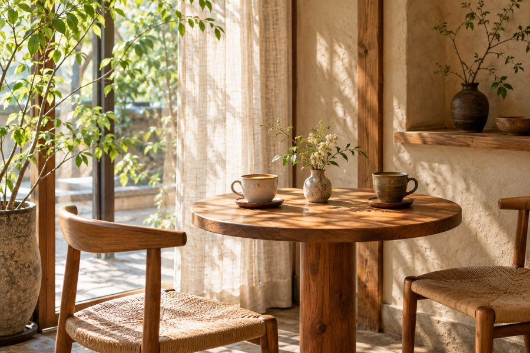

季節の野菜を、ひと皿に。
旬を感じる野菜を取り入れ、彩り豊かなランチに仕立てます。季節ごとに変わる味わいを、ゆっくりお楽しみください。
ABOUT
季節の味わいと、ほっとできる空間を。café hinataが大切にしていることをご紹介します。

CONCEPT
忙しい日々の途中で、ふっと肩の力を抜ける場所があったら。そんな想いから生まれたのが、café hinataです。木の温もりを感じる空間で、季節の野菜を使ったランチ、手作りスイーツ、自家焙煎コーヒーをご用意しています。特別な日にも、いつもの日にも。あなたのペースで過ごせる、やさしい時間をお届けします。
OUR VALUES
旬を感じる野菜を取り入れ、彩り豊かなランチに仕立てます。季節ごとに変わる味わいを、ゆっくりお楽しみください。
チーズケーキやプリンなど、手作りのスイーツをご用意。食後にも、午後のひと息にも寄り添う味わいを大切にしています。
自家焙煎のコーヒーを、くつろぎの時間のおともに。香りを楽しみながら、ゆっくりお過ごしください。
YOUR TIME
ひとりでゆっくりランチを楽しむ。友人とスイーツを囲んでおしゃべりをする。家族で食事の時間を過ごす。さまざまな日常に、心地よく寄り添う場所を目指しています。
メニューを見る